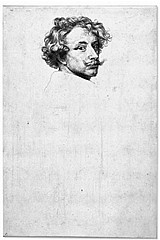

| |
Unless otherwise noted,
these catalogues were published by British Museum Press
The modern
Period (after 1880)
Prints
1450 - 1880
British
Drawings & Watercolours
Old Master
Drawings
Various
(See also the page
on further
reading)
The modern Period (after 1880)
F. Carey and A. Griffiths,
From Manet to Toulouse-Lautrec: French lithographs, 1860-1900
(1978), exhibition catalogue, 104pp., 11 colour, 60 b&w illus.
F. Carey and A. Griffiths,
The Print in Germany 1880-1933 : the Age of Expressionism (1984)
reprinted 1993, exhibition catalogue, 272pp., 9 colour, 221 b&w
illus.
F. Carey and A. Griffiths,
Avant-garde British printmaking, 1914-1960 (1990), exhibition
catalogue, 240pp., 16 colour, 241 b&w illus.
I. Goldscheider, Czechoslovak
prints from 1900 to 1970 (1986), exhibition catalogue, 51pp., 67
b&w illus.
F. Carey, Modern
Scandinavian Prints (1997), exhibition catalogue, 176pp., 12 colour,
155 b&w illus.
I. Zdanowicz and S.
Coppel, Fred Williams: an Australian Vision (2003), exhibition
catalogue, 128 pp., 130 colour illus.
D.
Thomson and S. Coppel, Avigdor Arikha from Life: Drawings and Prints
1965-2005 (2006), exhibition catalogue, 143 pp, 128 colour illus.x
hiD.
Tho . Thom
Prints 1490-1880
C. Dodgson, Early
German and Flemish Woodcuts (1903, 1911), collection catalogue,
2 vols: vol I 568pp. and 15 b&w plates; vol II 450pp. and 21 b&w
plates
G. Bartrum, German
Renaissance Prints 1490-1550 (1995), exhibition catalogue, 240pp.,
8 colour, 270 b&w illus.
David Paisey, The
British Museum, Department of Prints and Drawings: Catalogue of German
Printed Books to 1900 (2002), collection catalogue, 128 pp.,1 colour,
12 b&w illus
Mark P. McDonald,
Ferdinand Columbus: Renaissance Collector (2005), exhibition
catalogue, 256 pp., 14 colour, 160 b&w illus., also published in
Spanish (2004)
I. O'Dell, Deutsche
und Österreichische Exlibris 1500-1599 im Britischen Museum (2003),
collection catalogue, 256 pp., 489 b&w illus.
A.M. Hind, Early
Italian Engravings (1938-1948), a complete corpus including prints
in the British Museum, 7 vols; vols I & V catalogue, rest, plates
M. Bury, The Print
in Italy 1550-1620 (2001), exhibition catalogue, 248pp., 7 colour,
188 b&w illus.
A. Griffiths and C.
Hartley, Jacques Bellange c.1575-1616: Printmaker of Lorraine
(1997), exhibition catalogue, 144pp., 92 b&w illus.
M. Royalton-Kisch,
Rembrandt the printmaker (2000), exhibition catalogue, 384pp.,
500 b&w illus.
A. Griffiths, The
Print in Stuart Britain 1603-1689 (1998), exhibition catalogue,
320pp., 257 b&w illus.
D. Bindman, Hogarth
and His Times : Serious Comedy (1997), exhibition catalogue, 208pp.,
7 colour, 182 b&w illus.
F.G. Stephens and
M.D. George, Personal and Political Satires (1870-1954), collection
catalogue, 11 vols; not illus. Microfilm available from Chadwick Healy
F. O'Donoghue and
H.M. Hake, Engraved British Portraits (1908-1925), collection
catalogue, 6 vols; not illus.
F. Carey and A. Griffiths,
German Printmaking in the Age of Goethe (1994), exhibition catalogue,
240pp., 200 b&w illus.
J. Wilson-Bareau,
Goya's Prints: the Tomás Harris collection in the British Museum
(1981, reprinted 1996), 111pp., 100 b&w illus.
P. Goldman, Victorian
Illustrated Books 1850-1870 : The Heyday of Wood-Engraving (1994),
144pp., 8 colour, 92 b&w illus.
British Drawings & Watercolours
E. Croft-Murray and
P. Hulton, British Drawings: 16th and 17th centuries (1960),
collection catalogue, 2 vols, 619pp. and 297 b&w plates
L. Stainton and C.
White, Drawing in England from Hilliard to Hogarth (1987), exhibition
catalogue, 255pp., 80 colour, 160 b&w illus.
L. Stainton, British
Landscape Watercolours 1600-1860 (1985), exhibition catalogue, 84pp.,
144 colour, 7 b&w illus.
K. Sloan, "A Noble
Art": amateur artists and drawing masters c.1600-1800 (2000), exhibition
catalogue, 256pp., 136 colour, 93 b&w illus.
R. Hayden, Mrs
Delany: her life and her flowers (1980, reprinted 2000), 192pp.,
45 colour, 100 b&w illus.
K. Sloan, J.M.W.
Turner: watercolours from the R.W. Lloyd Bequest in the British Museum
(1998), exhibition catalogue, 152pp., 50 colour, 10 b&w illus.
J.A. Gere, Pre-Raphaelite
Drawings in the British Museum (1995), exhibition catalogue, 159pp.,
12 colour, 100 b&w illus.
Old
Master Drawings
J.K. Rowlands (ed.),
Master Drawings and Watercolours in the British Museum (1984),
208pp., 88 colour, 124 b&w illus.; contains a very brief text.
M. Royalton-Kisch,
H. Chapman and S. Coppel, Old Master Drawings from The Malcolm Collection
(1996), exhibition catalogue, 192pp., 100 colour illus.
J.K. Rowlands and
G. Bartrum, Drawings by German artists: the fifteenth century and
the sixteenth century by artists born before 1530 (1993), collection
catalogue, 2 vols, 306pp. and 321 b&w plates
J.K. Rowlands and
G. Bartrum, The Age of Dürer and Holbein: German drawings 1400- 1550
(1988), exhibition catalogue, 258pp., 40 colour, 242 b&w illus.
A.E. Popham and P.
Pouncey, Italian Drawings: 14th and 15th centuries (1950), collection
catalogue, 2 vols, 198pp. and 286 b&w plates
J. Wilde, Michelangelo
and his studio (1953), collection catalogue, 142pp. and 153 b&w
plates
P. Pouncey and J.A.
Gere, Raphael and his circle (1962), collection catalogue, 2
vols, 198pp. and 278 b&w plates
A.E. Popham, Artists
working in Parma in the 16th century (1967), collection catalogue,
2 vols, 139pp. and 154 b&w plates
J.A. Gere and P. Pouncey,
Artists working in Rome c.1550 to c. 1640 (1983), collection
catalogue, 2 vols, 254pp. and 370 b&w plates
N. Turner with R.
Eitel-Porter, Roman Baroque Drawings c.1620-c.1700 (1999), collection
catalogue, 2 vols, 294pp. and 592 b&w plates
N. Turner, Italian
Baroque Drawings (1980), 151pp., 65 b&w plates
H. Chapman, Padua
in the 1450s: Marco Zoppo and his contemporaries (1998), exhibition
catalogue, 80pp., 57 b&w illus.
C. Bambach, H. Chapman
and others, Correggio and Parmigianino, Master Draughtsmen of the
Renaissance (2000), exhibition catalogue, 192pp., 150 colour, 40
b&w illus.
N. Turner, Florentine
Drawings of the Sixteenth Century (1986), exhibition catalogue,
272pp., 100 colour, 100 b&w illus.
A.M. Hind and A.E.
Popham, Dutch and Flemish Drawings (1915-1932), collection catalogue,
5 vols.
J.K. Rowlands, Rubens:
drawings and sketches (1977), exhibition catalogue, 176pp., 4 colour,
224 b&w illus.
M. Royalton-Kisch,
The Light of Nature: landscape drawings and watercolours by Van Dyck
and his contemporaries (1999), exhibition catalogue, 192pp., 60
colour, 80 b&w illus.
M. Royalton-Kisch,
Drawings by Rembrandt and his circle in the British Museum (1992),
exhibition catalogue, 248pp., 60 colour, 265 b&w illus.
J.J.L. Whiteley, Claude
Lorrain: drawings from the collections of the British Museum and the
Ashmolean Museum (1998), exhibition catalogue, 167pp., 125 b&w
illus.
M. Kitson, Claude
Lorrain: Liber Veritatis (1978), collection catalogue, 185pp. and
200 b&w plates
N. Turner and C. Plazzotta,
Drawings by Guercino from British collections (1991), exhibition
catalogue, 304pp., 40 colour, 240 b&w illus.
P. Stein and M. Royalton-Kisch,
French Drawings: Clouet to Seurat (2005), exhibition catalogue
(Metropolitan Museum of Art, New York, and British Museum), 240 pp.,
102 colour, 31 b&w illus.
Various
L. Cust, Catalogue
of the collection of fans and fan-leaves presented to the trustees of
the British Museum by the Lady Charlotte Schreiber (1893), collection
catalogue, 138pp., not illus.
W. H. Willshire, A
descriptive catalogue of playing and other cards in the British Museum
(1876), collection catalogue, 360pp., with supplement (1877), 70pp.,
frontispiece and 23 colour plates
F. M . O'Donoghue,
Catalogue of the collection of playing cards bequeathed to the trustees
of the British Museum by the late Lady Charlotte Schreiber (1901),
collection catalogue, 228pp., not illus.
D. Bindman,
The Shadow of the Guillotine : Britain and the French Revolution
(1989), exhibition catalogue, 232pp., 200 b&w illus.
A. Griffiths (ed.),
Landmarks in Print Collecting (1996), exhibition catalogue, 304pp.,
9 colour, 159 b&w illus.
F. Carey (ed.), The
Apocalypse and the Shape of Things to Come (1999), exhibition catalogue,
352pp., 94 colour, 200 b&w illus.
G. Bartrum, Albrecht
Dürer and his Legacy (2002-3), exhibition catalogue, 320pp., 85
colour, 267 b&w illus.
M. McDonald, Els
mestres del gravat en la Col.lecció del British Museum (segles xv-xx)
(2003), exhibition catalogue, 21 colour, 221pp., 111b&w illus.
(text in Catalan and English)
S. O'Connell, London
1753 (2003), exhibition catalogue, 272 pp., 30 colour, 350 b&w
illus.
|
|

Anthony
van Dyck, Self-portrait, etching, around 1630
|
|
|
|